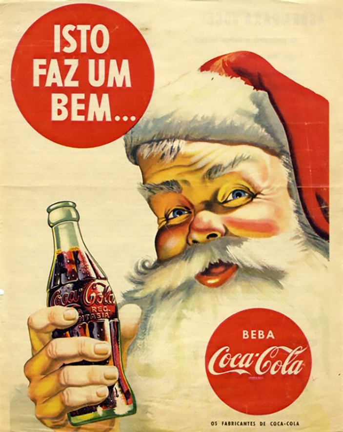
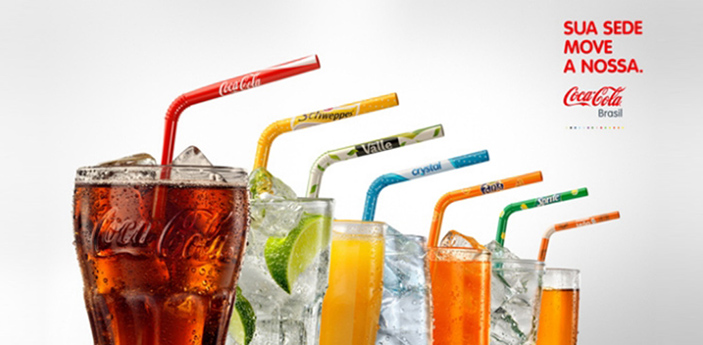

O primeiro contato do povo brasileiro com a empresa em questão foi em 1941, durante a Segunda Guerra Mundial. Robert Woodruff, o então presidente da Coca-Cola Company, havia prometido às Forças Armadas dos Estados Unidos que seus soldados sempre teriam acesso à sua bebida independente do local que estivessem, e por um preço muito acessível. Foi desta forma que as primeiras Cocas brasileiras foram fabricadas, em uma fábrica de água mineral localizada em em Recife, Santa Clara. O local foi escolhido devido ao “Corredor da Vitória”, um caminho formado pela capital de Pernambuco e Natal, e era uma parada obrigatória de todas as embarcações militares que pretendiam chegar à Europa.A primeira fábrica oficial da marca surgiu em São Cristóvão, Rio de Janeiro, e em 1942, as primeiras garrafas (185ml) foram produzidas. Após esta sede da Coca-Cola Brasil ter sido criada, a empresa começou a expandir seu negócio por todo o território, e em 1943 chegou a vez de São Paulo. No início os brasileiros não se familiarizaram rapidamente com o sabor da bebida, porém mal sabiam eles como o gosto deste refrigerante seria tão viciante e desejado futuramente.
O ano de 1945 foi um dos mais importantes para a marca, visto que o sistema de franquias foi instaurado no Brasil, modelo que já fazia muito sucesso em seu país de origem. O crescimento da empresa se iniciou em Rio Grande do Sul pela Industrial de Refrescos e pela Spal Indústria Brasileira de Bebidas, em São Paulo. A expansão da marca ocorreu graças ao final da Segunda Guerra Mundial.O principal produto comercializado pela empresa era e ainda é a bebida que carrega seu nome: a Coca-Cola, um refrigerante gaseificado composto principalmente por cafeína, noz de cola e caramelo. No Brasil, não demorou muito para que este produto fosse um dos mais comercializados em todo o território.Origem do nome Coca-ColaLogotipos da Coca-ColaLogotipos da Coca-ColaO nome Coca-Cola vem de duas junções de dois dos principais ingredientes da Coca clássica produzida no século 19: Cocaína (visto que o refrigerante continha uma pequena quantidade da droga em sua composição, porém parou de conter há muitos anos), e a noz de cola, um fruto colhido de árvores africanas, e possui alcaloides estimulantes semelhantes à cafeína.O início da história da Coca-Cola no BrasilInicialmente, apenas a bebida Coca-Cola era produzida, na Fábrica de Água Mineral Santa Clara, em Recife. Depois, foram instaladas fábricas na capital pernambucana e em NatalInicialmente, apenas a bebida Coca-Cola era produzida, na Fábrica de Água Mineral Santa Clara, em Recife. Depois, foram instaladas fábricas na capital pernambucana e em NatalO primeiro contato do povo brasileiro com a empresa em questão foi em 1941, durante a Segunda Guerra Mundial. Robert Woodruff, o então presidente da Coca-Cola Company, havia prometido às Forças Armadas dos Estados Unidos que seus soldados sempre teriam acesso à sua bebida independente do local que estivessem, e por um preço muito acessível. Foi desta forma que as primeiras Cocas brasileiras foram fabricadas, em uma fábrica de água mineral localizada em em Recife, Santa Clara. O local foi escolhido devido ao “Corredor da Vitória”, um caminho formado pela capital de Pernambuco e Natal, e era uma parada obrigatória de todas as embarcações militares que pretendiam chegar à Europa.A primeira fábrica oficial da marca surgiu em São Cristóvão, Rio de Janeiro, e em 1942, as primeiras garrafas (185ml) foram produzidas. Após esta sede da Coca-Cola Brasil ter sido criada, a empresa começou a expandir seu negócio por todo o território, e em 1943 chegou a vez de São Paulo. No início os brasileiros não se familiarizaram rapidamente com o sabor da bebida, porém mal sabiam eles como o gosto deste refrigerante seria tão viciante e desejado futuramente.A vida da Coca no BrasilNa década de 1940, a The Coca-Cola Company se expande pelo Brasil. Em 1943 é a vez do estado de São Paulo ganhar sua primeira filial. O cartaz acima é de 1948Na década de 1940, a The Coca-Cola Company se expande pelo Brasil. Em 1943 é a vez do estado de São Paulo ganhar sua primeira filial. O cartaz acima é de 1948O ano de 1945 foi um dos mais importantes para a marca, visto que o sistema de franquias foi instaurado no Brasil, modelo que já fazia muito sucesso em seu país de origem. O crescimento da empresa se iniciou em Rio Grande do Sul pela Industrial de Refrescos e pela Spal Indústria Brasileira de Bebidas, em São Paulo. A expansão da marca ocorreu graças ao final da Segunda Guerra Mundial.Anúncio de 1947Anúncio de 1947Além disso, ainda neste ano, os anúncios publicitários da Coca estavam em alta, graças ao McCann Erickson, que criou propagandas com slogans marcantes e divertidos como: “Coca-Cola borbulhante, refrescante, 10 tostões”. Ainda nas publicidades, as ilustrações costumavam apresentar artistas famosos da época bebendo a bebida direto da garrafa, um hábito inovador para os brasileiros.
